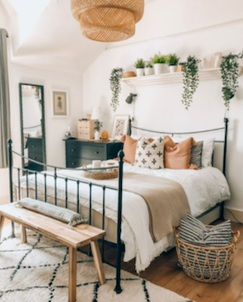
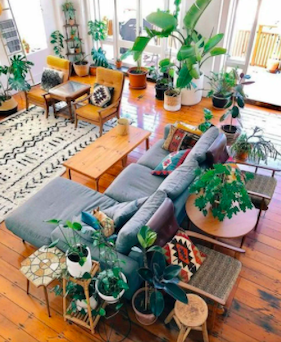
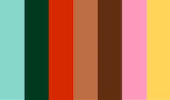

The Bohemian style, or "Boho" style, is for people who want their houses to feel full of life and culture. This style is much more eclectic and showcases a fun-filled and creative lifestyle that incorporates various pieces from different places. Boho also creates a cozy and warm home that feels well-lived in.


A complete opposite from the other two styles on this website, Boho decor is abundunt and no piece is the same. Try to utilize items which have been collected or thrifted over the years. Bohemian decor includes styles from all over the world and displays unique souvenirs. In addition, fringe and macramé are not uncommon in Bohemian spaces.
Since the Bohemian style is all about personalizing your space and making it "you", there aren't a lot of restrictions on color. It is common for warm earthy colors to be base colors that appear in every room and tie everything together, but really, go crazy. Add some bright colors and mix and match different patterns or keep it simple, neutral, and clean. Follow your heart's desire and don't hold back.
by Vivienne Wan